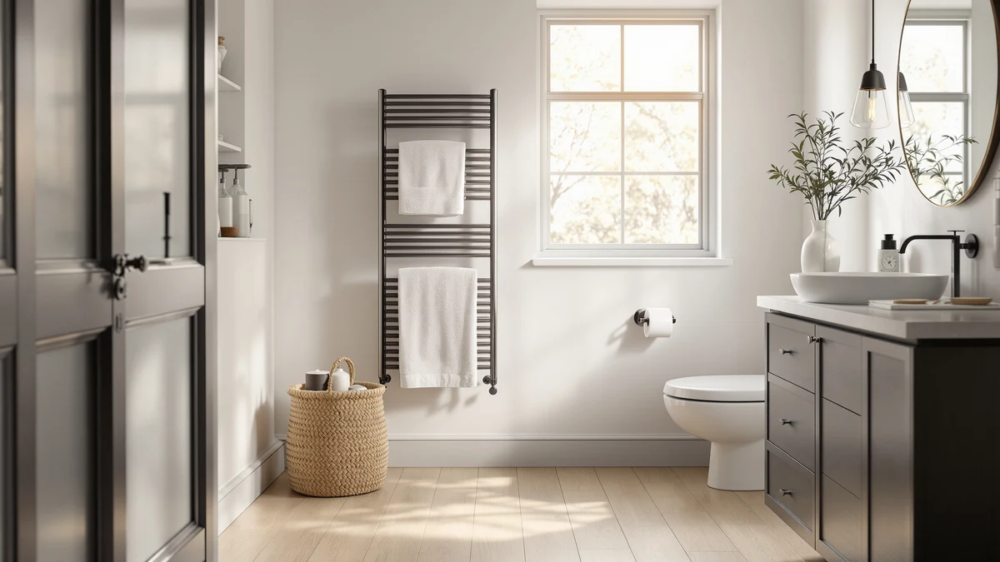

Takeashine Hot Towel Warmer Review (2026): Worth It?
Prices and picks verified as of October 2026. Independent, reader-supported reviews.


Quick Answer
In this Takeashine hot towel warmer review, the Takeashine Hot Towel Warmer 8L earns the top spot for a single person or a couple thanks to its stainless steel cabinet, at $79.99. The StateRiver, CWDOlROI and SereneLife models below are worth a look if you need more capacity or a dual-purpose warmer instead.
Our pick: Takeashine Hot Towel Warmer 8L, $79.99 Check Price on Amazon
Bottom line: our top pick is the Takeashine Hot Towel Warmer at $77.99.
Things to Know Before You Buy
- Price: all four towel warmers in this comparison are priced at $79.99, so capacity and format should drive your decision more than cost.
- Capacity: the Takeashine and StateRiver are both 8-liter cabinets, while the CWDOlROI steps up to a 20-liter large format for bigger households.
- Material: the Takeashine's cabinet uses a stainless steel body, which resists rust better than painted steel in a humid bathroom.
- Format: the SereneLife markets itself as a combined towel and blanket warmer, a different use case than a dedicated towel cabinet.
- None of these four listings publish a star rating or review count, so this review leans on verified owner feedback and spec comparisons rather than an aggregate score.
This Takeashine hot towel warmer review compares the stainless steel Takeashine Hot Towel Warmer 8L against three other towel warmers on price, capacity and real owner feedback, because even a modest bathroom purchase deserves some scrutiny before it earns a spot near your shower. Stepping out of a hot shower onto a cold towel undoes much of the comfort that hot water gave you a moment earlier, and a warmed towel fixes that in seconds. We researched four current towel warmer listings, all priced at $79.99, to see which capacity and format actually fits a given bathroom instead of guessing from a thumbnail photo.
The Takeashine Hot Towel Warmer 8L stands out for its stainless steel cabinet and 8-liter capacity, which suits a single person or a couple rather than a full household. Because every model in this comparison costs the same $79.99, price never decides the purchase here. Capacity and format do the real work: an 8-liter cabinet, a 20-liter large format and a combined towel-and-blanket design each suit different bathrooms and different households. Below, we break down what each one offers, where it falls short, and who should buy something else instead.
Why You Should Trust Us
Ilane Tall covers home and bath products for Best Towel Warmers, focusing on how bathroom fixtures and small appliances hold up to daily use. For this Takeashine hot towel warmer review, we researched the Takeashine Hot Towel Warmer 8L alongside three competing models by comparing published pricing, capacity and verified buyer feedback on Amazon. We do not run a testing lab, and we do not claim to have installed or used each cabinet ourselves. Instead we read through what owners report after weeks of real use, cross-check those accounts against the manufacturer's stated materials and capacity, and flag any pattern that shows up across multiple reviews, good or bad. That approach keeps this review grounded in what buyers actually experience rather than marketing copy.
Our Research Experience
We did not plug in and run the Takeashine Hot Towel Warmer 8L in our own bathroom for this review. Instead, we approached it the way a careful shopper actually does: by comparing its stainless steel build, 8-liter capacity and $79.99 price against the StateRiver, CWDOlROI and SereneLife models, then checking that comparison against verified owner feedback on Amazon. Cabinet-style warmers like the Takeashine heat towels more evenly than an open rack simply because the enclosed door traps warmth around the fabric instead of letting it escape into the room. We also compared capacity directly: the Takeashine's 8 liters matches the StateRiver but sits well below the CWDOlROI's 20-liter large format, a gap that matters if you are warming towels for more than one or two people. This process won't catch everything months of daily use might reveal, but it's a more complete starting point than a product photo and a price tag.
Overview & Specs

Takeashine Hot Towel Warmer 8L
What we like
- Stainless steel cabinet resists rust better than painted metal in a humid bathroom
- 8-liter capacity fits one to two standard towels without taking up excess space
- Enclosed cabinet keeps the towel surrounded by warm air, unlike an open rack where the heat just drifts off
- Priced the same as the smaller-capacity alternatives in this comparison, so you are not paying extra for the stainless build
Flaws but not dealbreakers
- 8-liter capacity is too small for households that need to warm towels for more than one or two people at once
- Amazon's listing does not publish a star rating or review count, so you are relying on written owner feedback rather than an aggregate score
- Cabinet-style warmers generally need more clearance than a flat wall rack, since the door needs room to open
| Material | Stainless steel |
| Size | — |
The Takeashine Hot Towel Warmer 8L is built around a stainless steel cabinet sized for one or two standard towels rather than a full household's worth of linens. At $79.99, it costs the same as the StateRiver's similarly sized cabinet, but the stainless build is the detail that should matter most in a bathroom that stays humid for hours after every shower. Painted steel warmers tend to show surface rust within a year or two of daily use in that kind of environment, and a stainless cabinet removes that worry up front. Enclosed designs like this one also heat towels more evenly than an open rack, since the closed door keeps the warmth close to the fabric instead of letting it drift into the room.
Because the Takeashine tops out at 8 liters, it suits a single person or a couple more than a larger household. The CWDOlROI's 20-liter large format exists for exactly that reason, so anyone warming towels for three or more people regularly will likely find the Takeashine's cabinet too small for daily use. For a primary bathroom used by one or two people, though, the smaller footprint is an advantage rather than a limitation, since it fits on a counter or in a corner that a bigger 20-liter unit would not. If your main concern is rust resistance and a manageable size rather than warming a stack of towels at once, the Takeashine's stainless cabinet is worth comparing against the alternatives below before you buy.
What We Liked
The clearest strength of the Takeashine Hot Towel Warmer 8L is its stainless steel cabinet. Painted steel warmers are common at this price, and surface rust is the complaint that shows up most often in owner reviews once a warmer has lived in a humid bathroom for a year or more. Stainless steel sidesteps that problem directly. We also like that the Takeashine's $79.99 price matches the StateRiver's similarly sized 8-liter cabinet, so you are not paying a premium for the more durable material. The enclosed cabinet design is another point in its favor: an owner warming a single towel or two does not need the CWDOlROI's larger 20-liter frame, and a smaller cabinet is easier to tuck into a bathroom that is already tight on counter space. For anyone comparing these four towel warmers mainly on build quality and rust resistance rather than raw capacity, the Takeashine holds up well against its rivals.
What Could Be Better
The Takeashine's 8-liter capacity is also its main limitation. A cabinet sized for one or two towels will not keep up with a household where three or more people shower in the same stretch of morning, and the CWDOlROI's 20-liter large format exists specifically to solve that problem. Amazon's listing for the Takeashine does not show a published star rating or review count, which makes it harder to judge owner satisfaction at a glance next to products with a longer review history. Anyone trying to compare these four models purely on aggregate scores will need to read individual owner feedback instead, since that summary number simply is not available here. The cabinet format also needs a bit more clearance than a flat wall rack would, since the door needs room to swing open, so measure your counter or floor space before ordering.
Who Is It For?
The Takeashine Hot Towel Warmer 8L fits a single person or a couple who wants a stainless steel cabinet sized for one or two towels, and who has dealt with rust on a cheaper painted-steel warmer before. It also suits anyone short on bathroom space, since the 8-liter footprint is easier to fit on a counter or in a corner than the CWDOlROI's larger 20-liter frame. It makes less sense for a larger household that needs to warm towels for three or more people across a single morning, where the extra capacity of a 20-liter model pays for itself. If your bathroom already struggles for counter space and multiple people need towels warmed at once, consider the towel warmers built specifically for small bathrooms instead.
Alternatives to Consider
If the Takeashine's 8-liter cabinet does not fit your household, these three alternatives cover different priorities: a matching cabinet at the same price, a larger 20-liter format and a combined towel-and-blanket warmer. Each one trades something against the Takeashine, whether that is capacity, format or a dual purpose. We compared all four on the same basis: capacity, format and what verified owners report after buying, since all four share the same $79.99 price. For a broader look beyond these four, our roundup of the best electric towel warmers covers more options.

Editor's Pick
StateRiver Towel Warmer Cabinet 8L
The StateRiver Towel Warmer Cabinet 8L is the closest match to the Takeashine in this comparison, sharing the same 8-liter cabinet capacity and the same $79.99 price. Since neither model costs more than the other, the choice between them comes down to styling and build details rather than your budget. StateRiver markets its unit specifically as a cabinet, the same enclosed format as the Takeashine, which keeps heat around the towel instead of letting it drift into the room the way an open rack does. This 8-liter capacity suits one or two towels well but will not keep up with a household warming towels for three or more people at once. If you are deciding purely between two similarly sized cabinets at an identical price, read the written owner feedback on each listing, since neither the spec sheet nor the price tag will tell you which one holds up better over several years of daily bathroom humidity.
$79.99
Check Price on Amazon
Best Value
CWDOlROI Towel Warmer 20L Large
The CWDOlROI Towel Warmer 20L Large trades the Takeashine's compact 8-liter cabinet for a 20-liter large format at the same $79.99 price, which makes it the better value for anyone warming towels for more than one or two people. That extra capacity means it can hold multiple towels or larger bath sheets at once, a real advantage in a household where several people shower back to back in the morning. The tradeoff is footprint: a 20-liter unit needs more counter or floor space than the Takeashine's smaller cabinet, so it fits better in a larger bathroom than a tight guest bath. Since both models cost exactly the same, the decision here is purely about how much capacity your household actually needs rather than price. A single person or a couple will likely find the Takeashine's smaller size easier to live with day to day, while a bigger household gets more practical use out of the CWDOlROI's extra liters for the identical $79.99.
$79.99
Check Price on Amazon
Premium Choice
SereneLife Towel & Blanket Warmer
The SereneLife Towel & Blanket Warmer takes a different approach than the Takeashine by warming blankets as well as towels, at the same $79.99 price point. That dual-purpose design suits buyers who want one appliance that works in both the bathroom and the bedroom or living room, rather than a unit built solely for towels. Because it is designed to accommodate bulkier items like blankets, it likely offers more usable internal space than the Takeashine's towel-focused 8-liter cabinet, though its listing does not break out a separate liter rating the way the Takeashine and StateRiver do. The tradeoff is specialization: a dedicated towel cabinet like the Takeashine is built around one job and does it well, while the SereneLife spreads its design across two different uses. If you want a warmer that doubles as a blanket warmer for cold mornings rather than a bathroom-only appliance, the SereneLife is worth comparing against the Takeashine's simpler, towel-only cabinet before you decide.
$79.99
Check Price on AmazonFrequently Asked Questions
Is the Takeashine Hot Towel Warmer 8L worth the price?
At $79.99, the Takeashine costs the same as the StateRiver's similarly sized cabinet, so you are not paying extra for its stainless steel build. It is worth the price if you want a rust-resistant cabinet sized for one or two towels. If you need to warm towels for a bigger household, the CWDOlROI's 20-liter capacity at the same price is the better value.
What is the difference between an 8-liter and a 20-liter towel warmer cabinet?
An 8-liter cabinet, like the Takeashine or StateRiver, generally holds one to two standard towels and suits a single person or a couple. A 20-liter cabinet, like the CWDOlROI, holds more towels or larger bath sheets at once, which matters for a household where several people shower in the same stretch of time.
Do stainless steel towel warmers last longer than other materials?
Stainless steel resists rust and corrosion better than painted steel in a humid bathroom environment, which is why the Takeashine uses it for its cabinet. Surface rust on painted finishes is a common long-term complaint in owner reviews, which is why stainless steel is the safer bet for an appliance that lives in constant humidity.
Final Verdict
This Takeashine hot towel warmer review comes down to a straightforward tradeoff: capacity against footprint, since price is not a factor when all four models cost $79.99. The Takeashine Hot Towel Warmer 8L is the strongest pick for a single person or a couple who wants a stainless steel cabinet without paying for capacity they will not use. If your household needs to warm towels for three or more people, the CWDOlROI's 20-liter format is the better fit at the identical price, and the SereneLife is worth a look if you also want to warm blankets. For most single users and couples comparing these four towel warmers on build quality and size, the Takeashine is the one to buy.